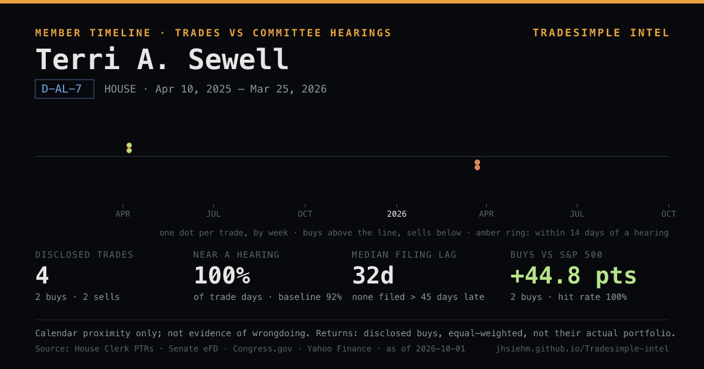

Open Terri A. Sewell's timeline in TradeSimple Intel
Rep. Terri A. Sewell (D-AL-7): 4 disclosed trades since Apr 10, 2025 · 100% of trade days within 14 days of a hearing on their committees vs 92% of all days · median filing lag 32d · disclosed buys +44.8 pts vs S&P 500 since trade (equal-weighted). Calendar proximity only.
